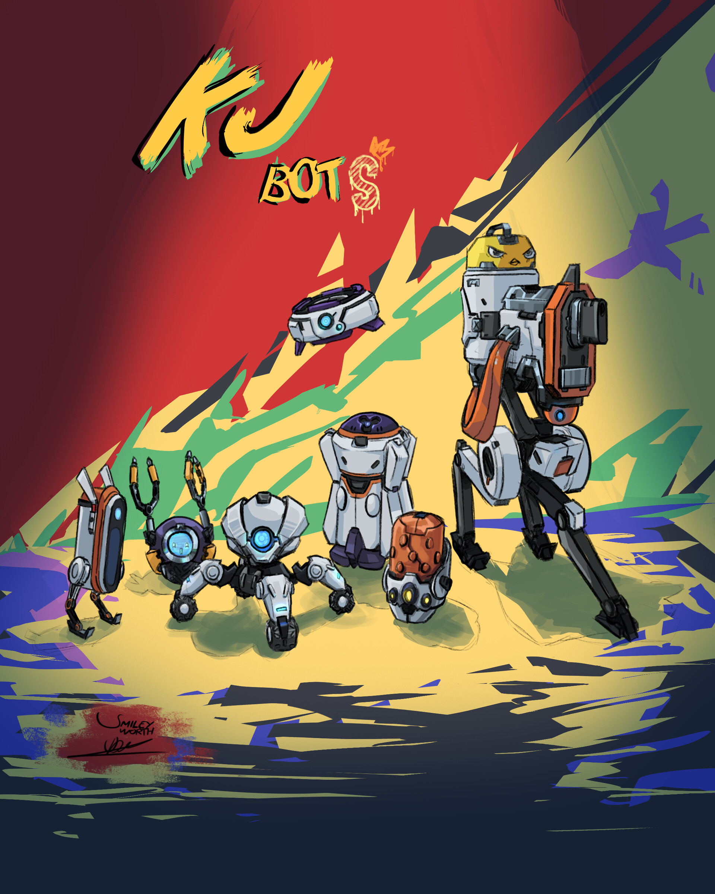

Trucos y consejos
Aspectos generales
-
Killjoy es una agente territorial que brilla cuando defiende un área que ya está bajo control delequipo.
-
Su principal defecto es el tiempo necesario para montar la estrategia de defensa. Así que solo brilla
cuando defiende un punto ya conquistado, pudiendo utilizar sus habilidades sabiendo que el equipo
enemigo se ve obligado a acercarse a ella.
-
Si Killjoy está defendiendo, es particularmente buena parando un rush, pero no aprovechará sus
habilidades si necesita hacer una retoma o el enemigo ataca con más prudencia
-
Tanto el Bot de Alarma como la Torreta se pueden recoger a una gran distancia, aunque sus enfriamientos
son extraordinariamente elevados.
Torreta

-
Puedes utilizar la Torreta como señuelo, cuando los enemigos salgan a dispararla podemos aprovechar para
asomar y tratar de acabar con ellos.
-
La torreta también nos alerta de la prsencia de rivales: cuando entran en su línea de visión hace un
ruido muy particular que no tardaremos en identificar.
Bot de alarma

-
No dudes en utilizar el bot de alarma para combinarlo con el Nanoenjambre. El estado de vulnerabilidad
afectará también a esta habilidad garantizando bajas más rápidas.
Granada de enjambre
-
Podemmos colocarla en las zonas de plantación o desactivación de Spike para ganar algo más de
tiempo cuando los enemigos quieiran tomar el punto.
Bloqueo
-
La amenaza de su explosión y el efecto de control nos permite controlar un punto durante casi 21
segundos, por lo que no dudéis en utilizarlo para retoamr o para ganar la situación de plantado.
-
Cuidado con donde lo colocamos, es fácil de destruir a través de las paredes.